01
RIVER & RAVINE / OKUTAMA
川音でいちにち、多摩川をさかのぼる
都心から2時間、水が透ける渓谷へ — 圏央道 青梅IC ／ 青梅街道
都心から2時間かからずに、水が透けて見える渓谷に着いてしまう贅沢なコース。歩く距離は自分たちで決められて、疲れたらすぐ車に戻れます。5連休の中でも渋滞リスクがいちばん低い行き先です。
- 走行
- 往復 約170km
- 費用の目安
- 二人で 1万円前後
- 歩く量
- のんびり 5,000歩
- 混み具合
- ゆるやか
- 7:30
出発
圏央道で青梅ICへ。コンビニの朝ごはんは買わずに、渓谷のベンチまで我慢するのがおすすめ。
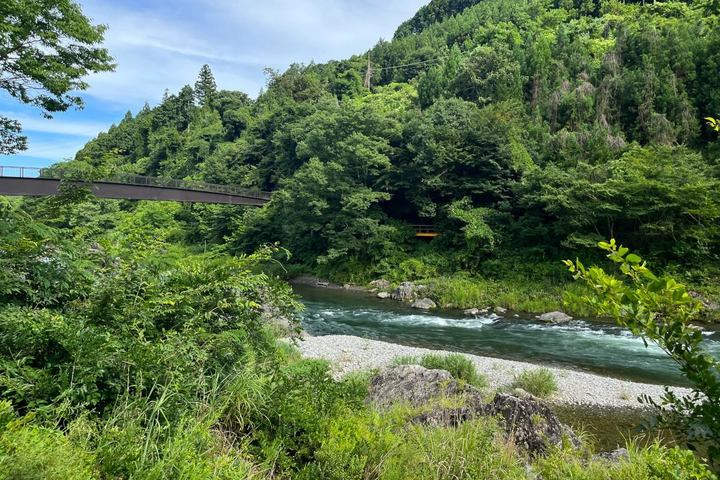
9:00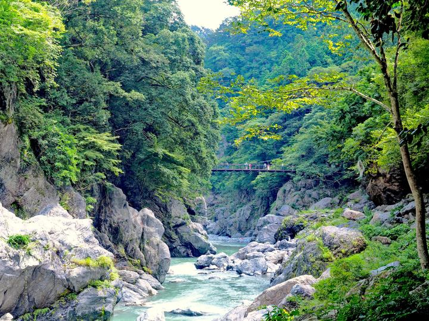
10:30- 11:30
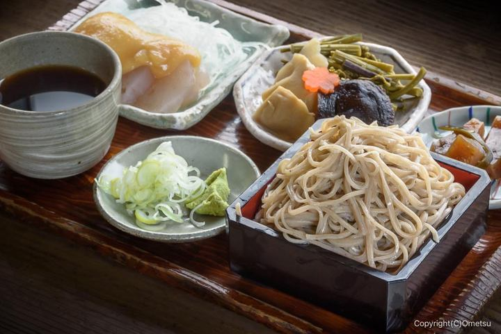
12:3012:30昼ごはん
奥多摩駅周辺の蕎麦か、湖畔の食堂で。連休は昼のピークが読めないので、早めか遅めにずらすのが安全。
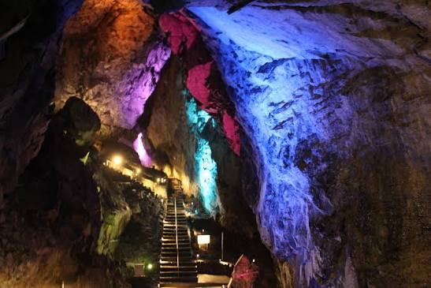
14:00 16:00
16:00- 17:30
帰路
青梅街道は夕方に流れが悪くなります。急がず、途中で夕飯を食べてから帰るくらいの気持ちで。
山道の運転が続くので、ガソリンは奥多摩に入る前に入れておくこと。奥多摩湖から先はスタンドがぐっと減ります。
02
DOWN THE ARAKAWA / NAGATORO / CHICHIBU
荒川を下って、岩畳に寝転ぶ
舟に乗る。それだけで一日が決まる — 関越道 花園IC ／ 国道140号
船に乗る予定がひとつ入るだけで、一日の骨格が決まります。午前にライン下り、午後は秩父の街か山へ、締めは温泉。二人で乗る舟は、写真より記憶に残るほうの体験です。
- 走行
- 往復 約190km
- 費用の目安
- 二人で 1.5〜2万円
- 歩く量
- ほどほど 7,000歩
- 混み具合
- 午前がねらい目
- 7:00
出発
関越道の下りは連休初日の朝がいちばん重いので、6時台に乗ってしまえるとかなり違います。
- 8:40
長瀞に到着、受付
ライン下りは当日受付が基本。着いたらまず舟の時間を押さえて、それから朝ごはんを探すのが正解です。
- 9:30
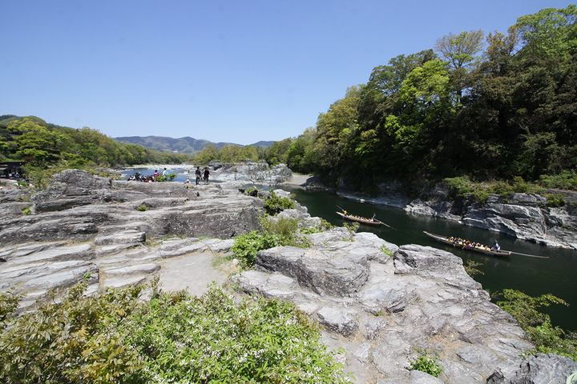
11:00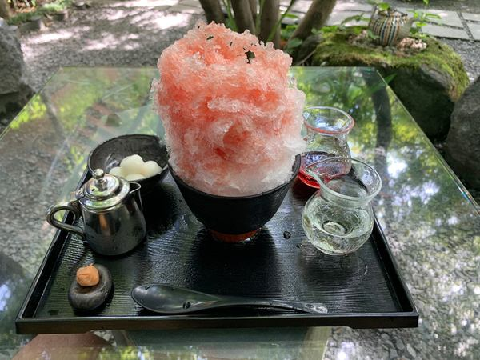
12:0012:00天然氷のかき氷
長瀞は天然氷のかき氷が名物。人気店は待ちが長いので、行列を見て無理そうなら潔く諦めて次へ。
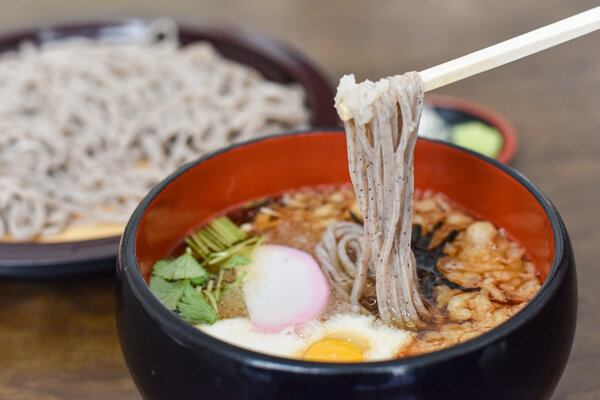
13:00 15:00
15:00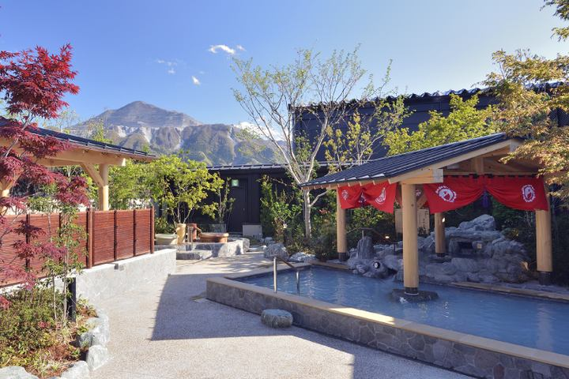
16:30- 18:30
帰路
花園ICから関越で東京方面へ。
ライン下りは増水すると運休や区間短縮になります。前日と当日朝に運航状況を確認して、だめだった場合の代案（宝登山ロープウェイなど）を頭に置いておくと慌てません。
03
HAMBURG & MT.FUJI / GOTEMBA / MISHIMA
げんこつハンバーグを軸に、富士の裾野をまわる
待ち時間を観光に変える、肉の一日 — 東名 御殿場IC ／ 新東名 長泉沼津IC
さわやかは予約ができません。だからこの一日は「受付を取る」ことから始めて、順番を待つ時間を観光に変えてしまう組み立てにします。肉が主役でも、まわりの景色は水と橋と富士山です。
- 走行
- 往復 約210km
- 費用の目安
- 二人で 2万円前後
- 歩く量
- ほどほど 6,000歩
- 混み具合
- 覚悟が必要
- 6:30
出発
東名の下りは朝が勝負。海老名を過ぎるまでに流れておきたいところです。
 8:308:30
8:308:30御殿場に到着
御殿場インター店はスマホからの受付発券が9時開始。到着したらまず受付、それから動き出します。連休は数時間待ちが当たり前なので、待ち時間ありきで一日を設計するのが唯一の攻略法です。
GOOGLE MAPS ↗- 9:30
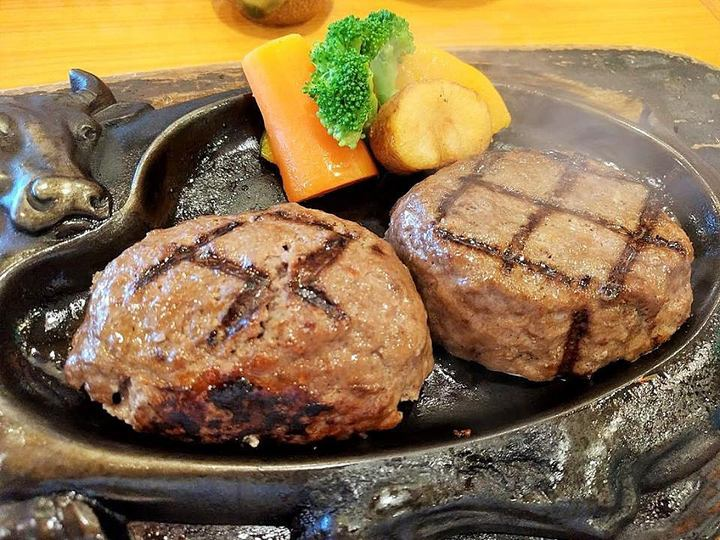
11:3011:30さわやか（げんこつハンバーグ）
牛肉100％の丸いハンバーグを、目の前で半分に切って鉄板で仕上げてくれます。ソースはオニオンとデミの二択。白いごはんとの相性がいいので、パンよりライスがおすすめ。
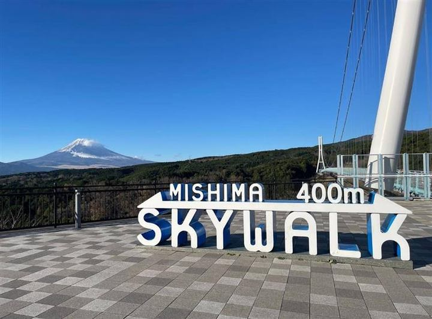
13:30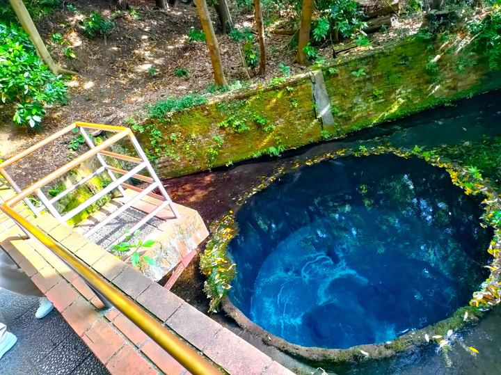
15:30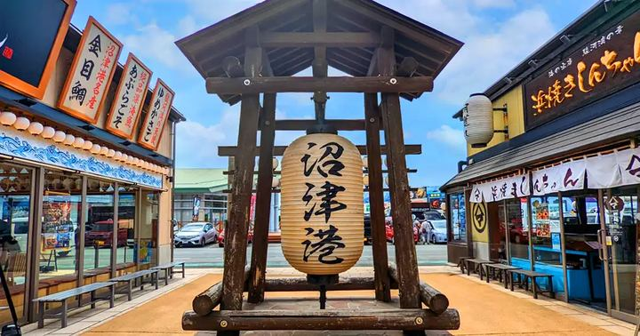
16:30- 17:30
帰路
東名の上りは夕方から確実に混みます。18時台に突っ込むより、沼津で早めの軽い夕飯を挟んで19時以降に走り出すほうが、結果的に早く帰れることが多いです。
受付は前日には取れません。当日、受付開始の時刻ちょうどにスマホを触れる状態にしておくこと。御殿場プレミアム・アウトレット店とインター店は別受付なので、狙いをどちらかに決めてから向かいます。
04
MARKET BY THE SEA / NAKAMINATO / OARAI
朝いちの市場から、海の鳥居まで
朝いちの市場から、海の鳥居まで — 常磐道 ひたち海浜公園IC ／ 北関東道
那珂湊は「早く着いた人が勝つ」場所です。開場と同時に入って海鮮を食べてしまえば、そのあとの一日がまるごと自由になります。9月は春のネモフィラ期のような大混雑がなく、海沿いを気持ちよく流せる時期。
- 走行
- 往復 約250km
- 費用の目安
- 二人で 1.5〜2万円
- 歩く量
- しっかり 9,000歩
- 混み具合
- 朝だけ本気を出す
- 6:20
出発
常磐道で北へ。三郷から先は比較的流れます。
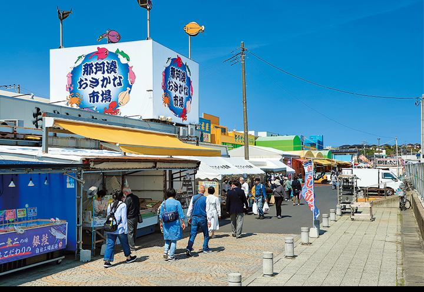
8:30 10:3010:30
10:3010:30市場をひやかす
その場で食べる以外に、氷詰めにして持ち帰るという楽しみ方も。保冷バッグを積んでいくと選択肢が広がります。
- 11:1511:15
国営ひたち海浜公園
みはらしの丘のコキアは、この時期はまだ緑から色づき始めのころ。丸い株が一面に並ぶ光景は紅葉期とは別物で、しかも人が少ない。園内は広いのでレンタサイクルが快適です。
GOOGLE MAPS ↗  14:00
14:00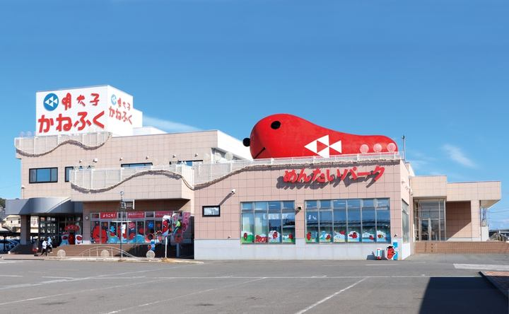
15:30- 17:00
帰路
常磐道の上りは夕方に柏あたりで詰まります。守谷SAで一息入れて時間をずらすのが定番の逃げ方。
市場の駐車場は正面が有料、繁忙日は近くの卸売市場敷地が無料の臨時駐車場として開くことがあります（開門は10時ごろで、15時には出さないといけないタイプ）。朝いちで行くなら正面に停めてしまうのがいちばん簡単です。
05
EARLY AUTUMN AT 1,300M / OKU-NIKKO
いろは坂をのぼって、標高1,300mの秋へ
いちばん遠くて、いちばん景色が大きい — 東北道 宇都宮IC ／ 日光宇都宮道路
5つの中でいちばん遠く、いちばん朝が早い。その代わり、滝と湖と湿原が半日で全部出てきます。9月下旬の奥日光はもう秋のはじまりで、朝は10度台まで下がることも。上着は必ず積んでください。
- 走行
- 往復 約330km
- 費用の目安
- 二人で 2〜2.5万円
- 歩く量
- たっぷり 12,000歩
- 混み具合
- いろは坂しだい
- 5:30
出発
この日だけは早起きが必須。いろは坂は昼前から詰まり始めるので、8時台に上がりきってしまうのが理想です。
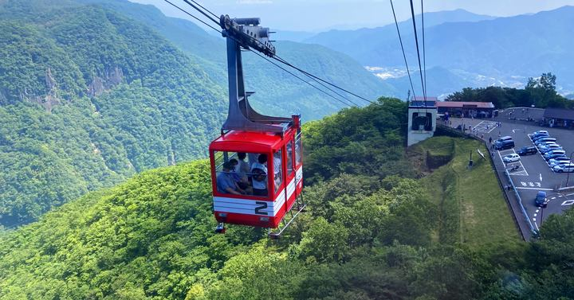
8:15 9:30
9:30 11:00
11:00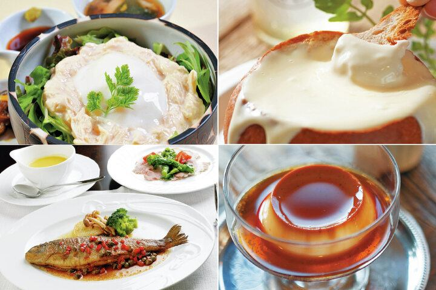
12:3012:30昼ごはん
湯波（ゆば）料理か、湖畔のカフェで軽く。日光の湯波は京都のものより厚くて食べごたえがあります。
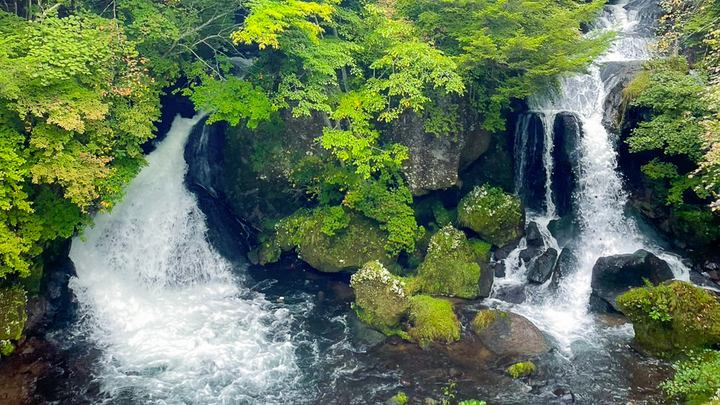
13:45- 14:30
- 16:00
下山、帰路
下りのいろは坂は一方通行なので流れは比較的スムーズ。東照宮まで足を伸ばすと確実に時間が足りないので、そこは次の機会に取っておきます。
いろは坂は上りと下りで別の道です。上り（第二いろは坂）の渋滞を避けられるかどうかで一日の質が変わるので、出発を1時間早めるのがいちばん効く投資になります。
06
CLIFF OVER THE BAY / BOSO / NOKOGIRIYAMA
海の上を走って、断崖から東京湾をのぞく
海の上を走って、断崖から東京湾をのぞく — アクアライン ／ 富津館山道路 富津金谷IC
道そのものが観光になる珍しいコース。アクアラインで海の真ん中に降り立ち、そのまま房総へ渡って、石を切り出した跡の絶壁に立ちます。海鮮はアジ。那珂湊とはまったく違う味の海です。
- 走行
- 往復 約210km
- 費用の目安
- 二人で 1.5万円前後
- 歩く量
- 階段が多め 9,000歩
- 混み具合
- 10時からが本番
- 6:30
出発
アクアラインへ。連休は上りも下りも昼前後が重くなるので、朝のうちに渡ってしまいます。
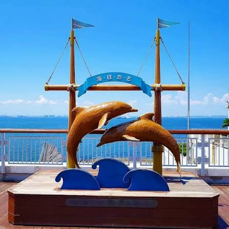
7:20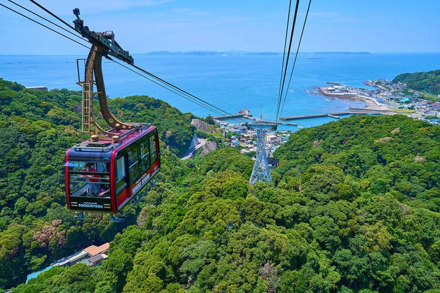
8:30- 9:009:00
日本寺・地獄のぞき
拝観料は大人700円ほど。突き出た岩の先から100m下の石切場をのぞき込みます。混雑時は展望台の順番待ちが出ることも。近くの「ラピュタの壁」と呼ばれる垂直の絶壁もあわせて。
GOOGLE MAPS ↗  10:3010:30
10:3010:30百尺観音、そして下山
大仏まで下りると、戻りに30〜40分の登り返しが待っています。体力と相談して、無理なら山頂側だけで切り上げるのが賢明。
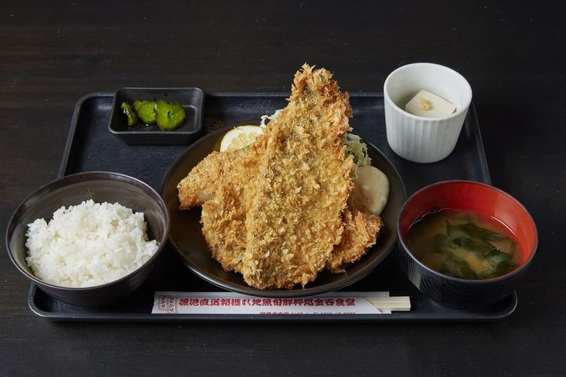
11:30 13:3013:30
13:3013:30濃溝の滝・亀岩の洞窟
洞窟の穴から差す光がハート形に見えるのは早朝の限られた時期だけ。日中はその写真は撮れませんが、苔と水音だけの静かな渓流散歩として十分きれいです。
GOOGLE MAPS ↗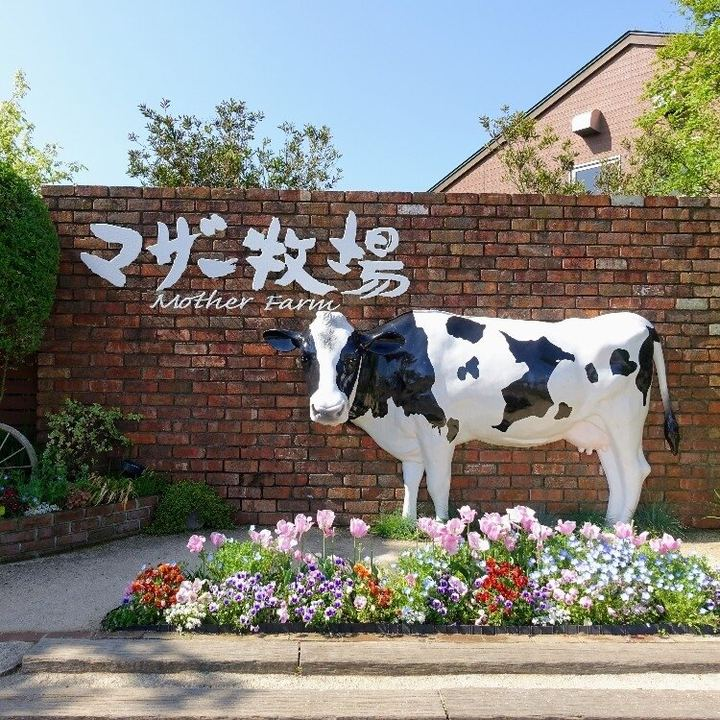
15:00- 16:30
帰路
アクアラインの上りは夕方にかなり詰まります。海ほたるで夕景を見ながら1時間つぶすほうが、渋滞の中にいるより気分がいい。
帰りを変化球にするなら、金谷から東京湾フェリーで久里浜へ渡る手があります。車ごと約40分の船旅で、そのまま横須賀・三浦経由の帰り道に。アクアラインの渋滞を丸ごと回避できて、船に乗ること自体がイベントになります。
07
GRAPES & GORGE / KATSUNUMA / SHOSENKYO
ぶどうをもいで、渓谷を歩いて、夜景の湯へ
ぶどうが一年でいちばんおいしい週に — 中央道 勝沼IC ／ 甲府昭和IC
この週末がぶどうの当たり日です。シャインマスカットも巨峰もピオーネも、9月下旬がちょうど最盛期。畑で食べてから渓谷を歩き、盆地を見下ろす露天風呂で終わる、味と景色の欲張りコース。
- 走行
- 往復 約220km
- 費用の目安
- 二人で 1.5〜2万円
- 歩く量
- ほどほど 8,000歩
- 混み具合
- 小仏トンネルが山場
- 6:30
出発
中央道の下りは小仏トンネル手前が詰まります。7時前に八王子を抜けられると、その後はずっと快適。
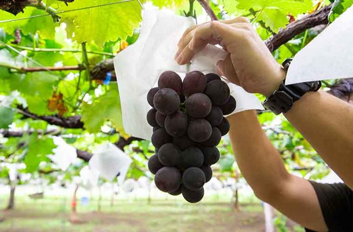
8:308:30ぶどう狩り
勝沼には30種類以上を育てている園もあります。9月下旬はシャインマスカットが最盛期で、巨峰やピオーネも並ぶ贅沢な時期。食べ放題の園もあれば、もぎ取って持ち帰る園もあるので、好みで選んで。
GOOGLE MAPS ↗- 10:3010:30
ぶどうの丘
丘の上から一面のぶどう畑を見渡せます。地下のワインカーヴでは試飲もできますが、運転する側は当然パス。気に入った1本を買って、家で開けるほうが楽しみが伸びます。
GOOGLE MAPS ↗  12:0012:00
12:0012:00昼ごはん
ほうとうか、甲州の鳥もつ煮。ほうとうは量が多いので、頼みすぎに注意です。
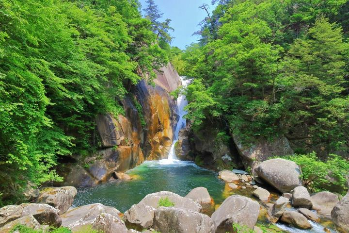
13:30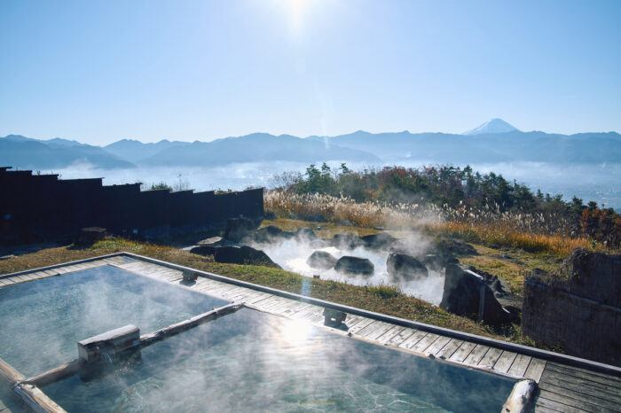
16:0016:00ほったらかし温泉
甲府盆地をまるごと見下ろす露天風呂。日が落ちる時間に入れると、湯に浸かったまま街の明かりが一つずつ点いていくのが見えます。この日のためだけに行っても後悔しない場所。
GOOGLE MAPS ↗- 18:00
帰路
中央道の上りは相模湖から八王子で渋滞しがち。表示によっては圏央道まわりのほうが早いこともあるので、出る前にルートを比べておくこと。
ぶどう狩りは園によって完全予約制のところと、当日ふらっと入れるところがあります。連休は前者が埋まりやすいので、行きたい園が決まっているなら数日前に電話を。土が柔らかいことがあるので、足元はスニーカーで。

08
FACE TO FACE WITH FUJI / KAWAGUCHIKO / FUJIYOSHIDA
一日じゅう、富士山が正面にいる
一日じゅう、富士山が正面にいる — 中央道 河口湖IC ／ 東富士五湖道路
御殿場が富士山の裾を横から見る一日なら、こちらは正面から向き合う一日。ただし午後は雲が出やすいので、いちばんの絶景を朝に置く構成にしています。写真を撮りたい日はこちらです。
- 走行
- 往復 約230km
- 費用の目安
- 二人で 1.5万円前後
- 歩く量
- 階段あり 9,000歩
- 混み具合
- 午前が勝負
- 6:00
出発
富士山が雲に隠れる前に着きたいので、この日はとにかく早出。中央道の小仏トンネルも同じ理由で早いほど有利です。
- 8:008:00
新倉山浅間公園
五重塔と富士山を一枚に収められる展望デッキへ。398段の階段が待っていますが、登りきった先の眺めは階段の記憶を上書きしてくれます。息が上がるので水を持って。
GOOGLE MAPS ↗ 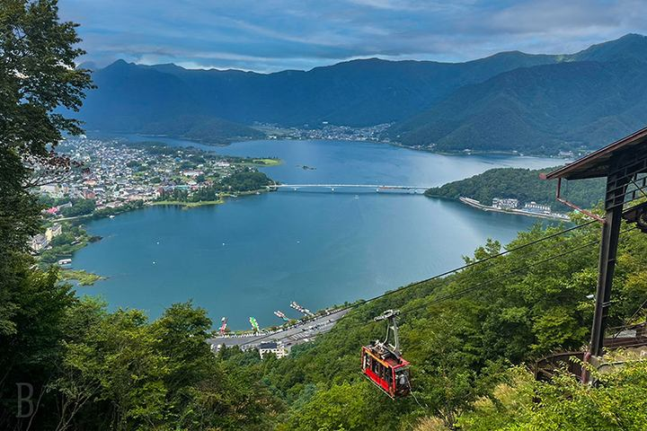
9:30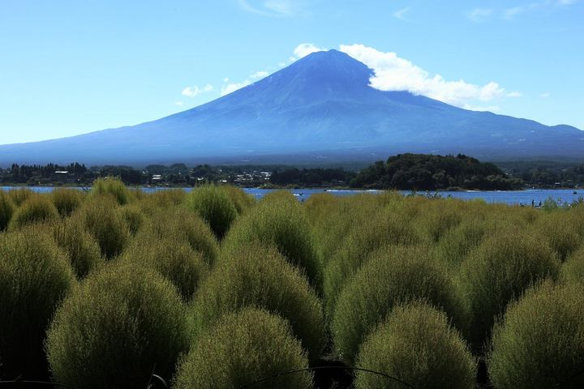
11:00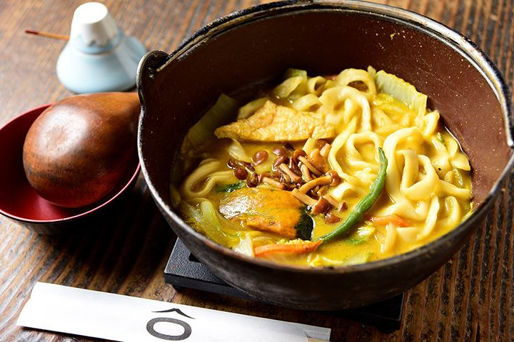
12:3012:30ほうとう
かぼちゃの溶けた味噌のつゆに、平たい麺。歩いたあとの体に染みます。人気店は昼のピークに行列ができるので、11時台か13時台にずらすのも手。
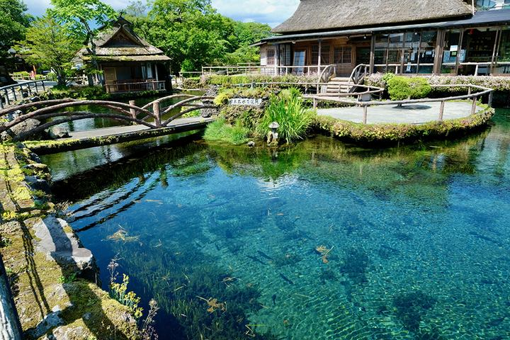
14:00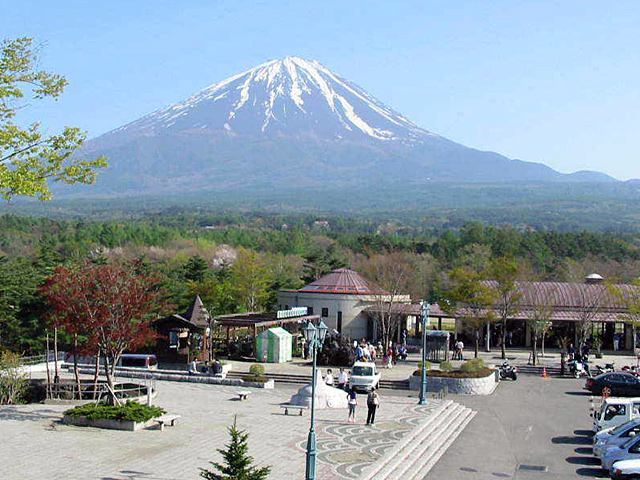
15:30- 16:30
帰路
中央道の上りは夕方に長く伸びます。焦らず、途中のPAで休みながら。
富士山は午前中のほうが見える確率が高く、昼を過ぎると雲がかかりやすくなります。もし朝の時点で山が完全に隠れていたら、無理に展望スポットを回らず、忍野八海と食べ物に予定を寄せてしまうほうが満足度は高いはず。
09
LAKE, SHRINE & STONE STEPS / HARUNA / IKAHO
榛名湖から石段街へ、坂を下りていく一日
湖から石段街へ、坂を下りていく — 関越道 渋川伊香保IC
朝は標高1,000mの湖、昼は杉並木の参道、夕方は温泉街の石段。山の上から順に下りてくるだけで一日がきれいに組み上がります。締めが温泉なので、帰りの車内が静かで穏やかになるコース。
- 走行
- 往復 約270km
- 費用の目安
- 二人で 1.5万円前後
- 歩く量
- 石段と参道 10,000歩
- 混み具合
- おだやか
- 7:00
出発
関越道で渋川伊香保ICへ。そこから榛名山を一気に登ります。
- 8:408:40
榛名湖・榛名富士
カルデラ湖と、その真ん中に立つ形のいい山。ロープウェイで榛名富士の山頂に上がると、関東平野の方まで見渡せます。朝の湖畔は空気が澄んでいて、9月下旬なら少し肌寒いくらい。
GOOGLE MAPS ↗ 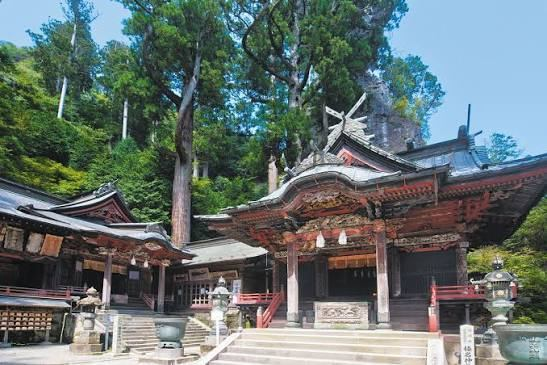
10:3010:30榛名神社
参道の杉並木を15分ほど歩いて、巨大な岩に寄り添うように建つ社殿へ。渓流と奇岩と杉に囲まれた道は、それ自体が目的地になる気持ちよさです。往復1時間半を見ておくこと。
GOOGLE MAPS ↗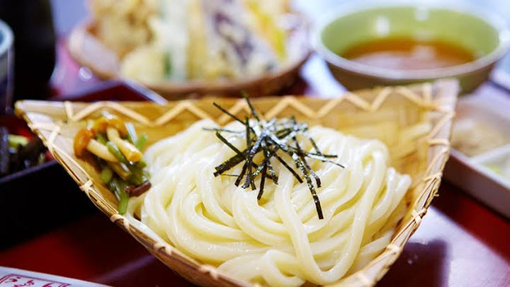
12:30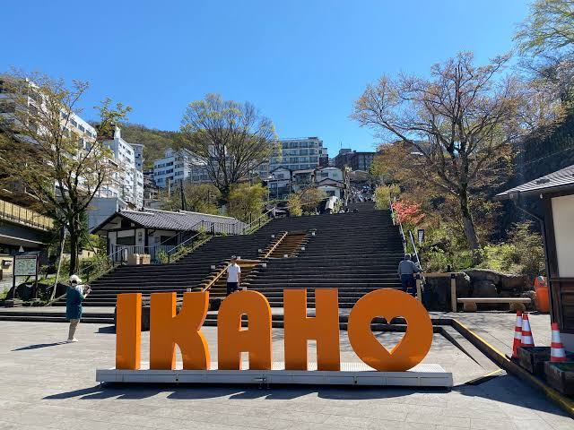
14:0014:00伊香保 石段街
365段の石段の両側に、射的や温泉まんじゅうの店が並びます。上の伊香保神社側の駐車場に停めて、下りながら歩くのが体力的に正解。焼きまんじゅうは食べ歩き向きです。
GOOGLE MAPS ↗ 15:30
15:30- 17:00
帰路
関越の上りは高坂から先が混みやすいところ。時間が合えば途中で夕飯を挟んで、ピークを外して帰ります。
榛名湖から伊香保へ下る道は、カーブが続くうえに勾配もそこそこあります。同乗する側が酔いやすいなら、この区間だけ窓を開けて、飛ばさずゆっくり下ること。
10
FIRST LEAVES OF AUTUMN / NASU KOGEN
日本でいちばん早い秋を、先に見に行く
日本でいちばん早い秋を、先に見に行く — 東北道 那須IC ／ 那須高原SIC
茶臼岳の紅葉は9月下旬から色づき始めます。ほとんどの人がまだ夏の格好をしている時期に、山の上だけ先に秋になっている。その時間差を見に行くのがこの一日の主題です。
- 走行
- 往復 約360km
- 費用の目安
- 二人で 2〜2.5万円
- 歩く量
- 山道あり 11,000歩
- 混み具合
- 山頂の駐車場が鍵
- 5:30
出発
この日も早起きが必要。ロープウェイの駐車場は午前中の早い時間に埋まることがあり、そうなると下から順番待ちになります。
- 8:008:00
那須ロープウェイ（茶臼岳）
標高1,684mの山頂駅へ。そこから牛ヶ首方面へ歩けば、岩と噴煙と色づき始めた斜面が一度に見られます。強風で運休になることがあるので、当日朝の運行状況は必ず確認を。
GOOGLE MAPS ↗ 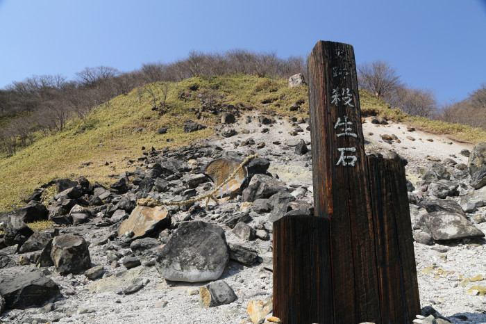
10:30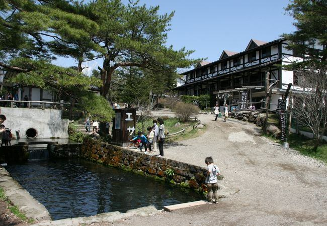
11:30- 13:00
昼ごはん
那須街道沿いにはベーカリーやカフェが点在しています。牧場でだいぶ食べているはずなので、軽めで十分。
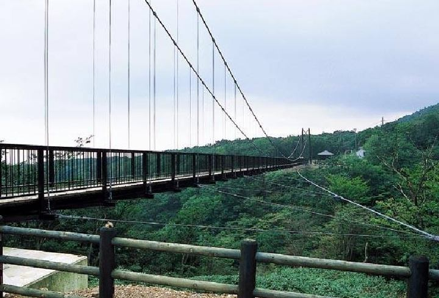
14:00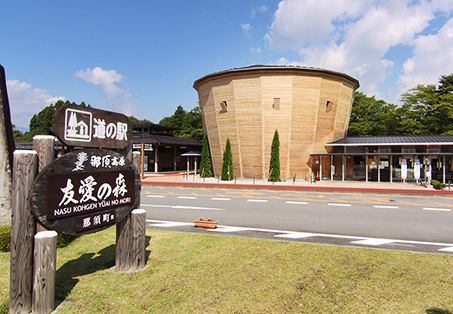
15:3015:30道の駅 那須高原友愛の森
地元の野菜や果物が並ぶ道の駅。9月下旬なら梨やりんごが出ています。焼きたてのラスクを売る店も那須街道沿いにあるので、翌朝の朝ごはんになるものを選んで帰路へ。
GOOGLE MAPS ↗- 16:30
帰路
東北道の上りは佐野から先で流れが悪くなりがち。休憩を長めに取って、時間をずらしながら帰ります。
山頂駅から先は、標高1,700m近い場所の風です。9月下旬でも風が吹けば体感は一桁になることがあるので、ウインドブレーカーは必ず持っていくこと。逆に下界の那須高原は日中まだ暖かいので、脱ぎ着できる格好が正解です。